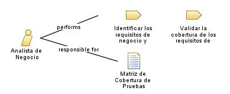

| Role: Analista de Negocio |
| |
 |
| Encargado de comprender y analizar los procesos de negocio del módulo de facturación y contabilidad. Su función principal es identificar las necesidades y requisitos del negocio, documentar los procesos existentes, y proponer mejoras y soluciones que optimicen la eficiencia y la rentabilidad de la organi |
| Synonyms: Business
Analyst |
|
Relationships
 |
| Primary Performs |
|
| Modifies |
|
Main Description
|
Es responsable de documentar el proceso inicial para la creación del modulo de facturación y contabilidad. Esto implica
recopilar información sobre las actividades, los flujos de trabajo, los actores involucrados y las reglas de negocio
relacionadas, trabaja en colaboración con los interesados, recopilará y documentará los requisitos específicos del negocio,
identificará áreas de mejora y propondrá soluciones para optimizar los procesos. |
Staffing
| Skills | calidad
de liderazgo, toma de desiciones, comunicación, analisis y organización |
| Synonyms | Business
Analyst |
|